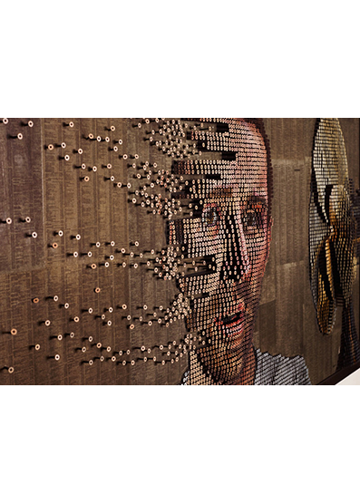
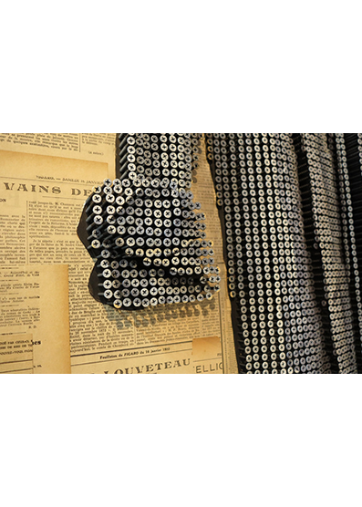

Pensamos que la creatividad es uno de los motores más potentes que tiene el ser humano para solucionar
problemas y mejorar su entorno. Por eso, vamos a enseñaros proyectos, iniciativas, DIY, que aumenten y
desarrollen vuestra propia creatividad en pro de la sostenibilidad. Reutilizar viejas cosas que tenemos
por casa y transformarlas en nuevos objetos, marcas de ropa hechas a base de PET reciclado o artistas
cuyas obras están íntegramente hechas a partir de basura, son
algunos de los temas que tratamos en este artículo.
Por eso, hoy vamos a hablar de Arte que usa objetos de deshecho para la creación de las obras.
El movimiento Maker se basa en la creación de inventos hechos a partir de residuos a falta de materias
primas;
por eso os queremos enseñar a varios artistas que además de crear obras
impresionantes y expresar a través de arte, mejoran el Medio Ambiente y lanzan un mensaje de alerta
gracias al reciclaje y la reutilización.
Elisa Insua
nació en Buenos Aires en 1990. En 2011 completó la licenciatura en Economía y Negocios en la
Universidad Torcuato Di Tella.
A los dieciséis años inició su práctica como artista autodidacta, creando ensamblajes y esculturas con
materiales de desecho. Poco a poco fusionó su práctica artística con conceptos relacionados con la economía,
el consumo excesivo y la insaciabilidad humana.
Algunas de sus exposiciones individuales más relevantes incluyen "Sugar Coated Lies" en Kyoto Art Center
(Kyoto, 2022), "The Path of Least Resistance" en Materials for the Arts (Nueva York, 2021) y "Virtual
Vanitas" en Usina del Arte. (Buenos Aires, 2019).
Formó parte de varias muestras colectivas en Sudamérica y Europa, entre ellas “Mercados a través del arte
contemporáneo” en el Museo del Banco de México (Ciudad de México, 2022), “Lúdica” en MACSur - Museo de Arte
Contemporáneo del Sur (Buenos Aires, 2018) ), "Memento Mons" en el Beaux Arts Mons Museum (Mons, Bélgica,
2019) y "Slight Omission" en Cerquone Projects (Madrid, 2018).

Fading thougths, Andrew Myers

Detalle 1 de la obra: The classic, Andrew Myers

Detalle 2 de la obra: The classic, Andrew Myers